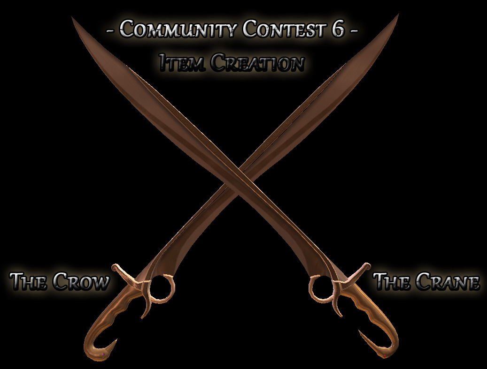
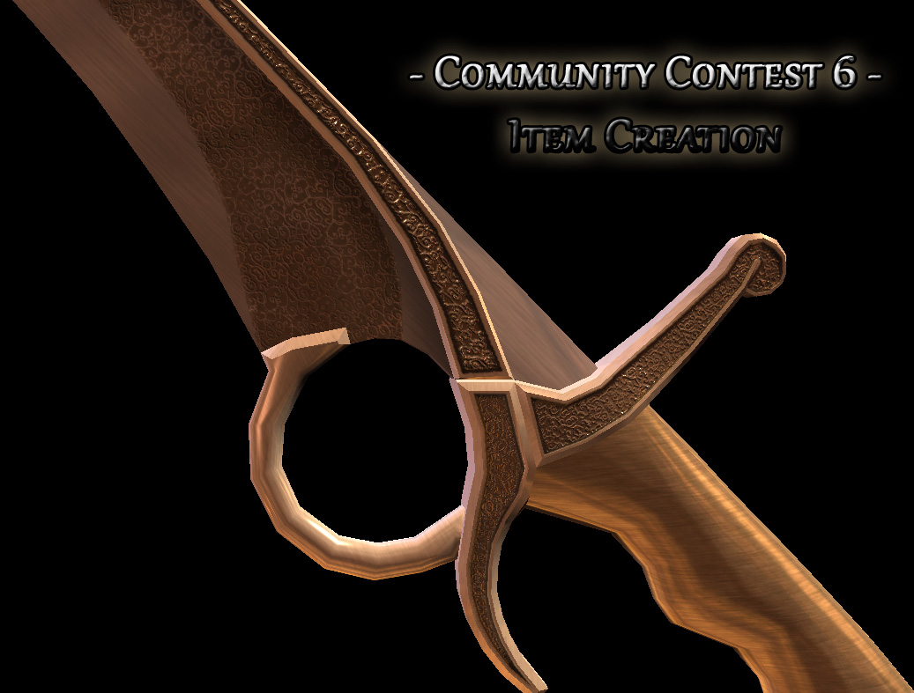
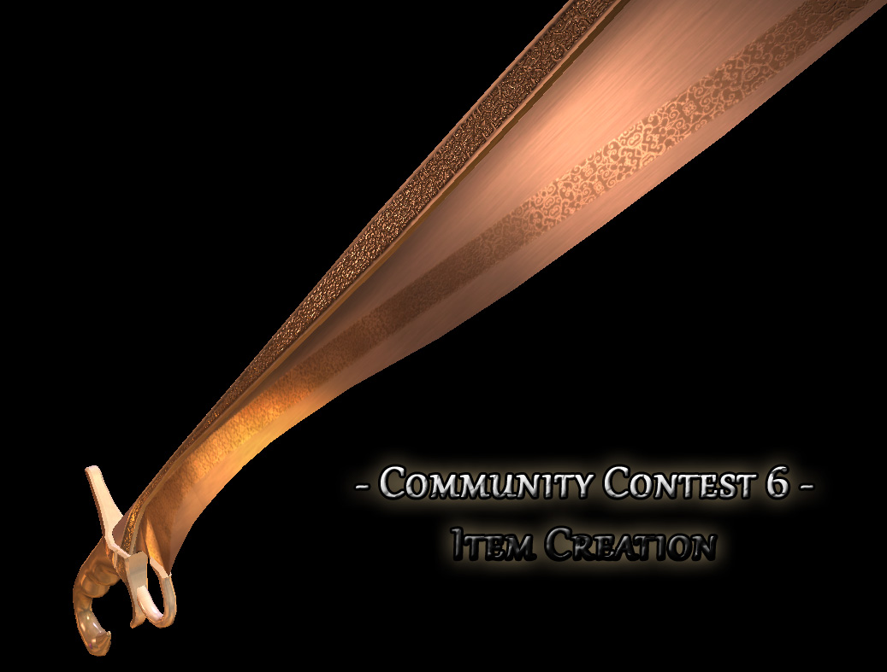
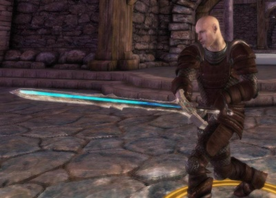
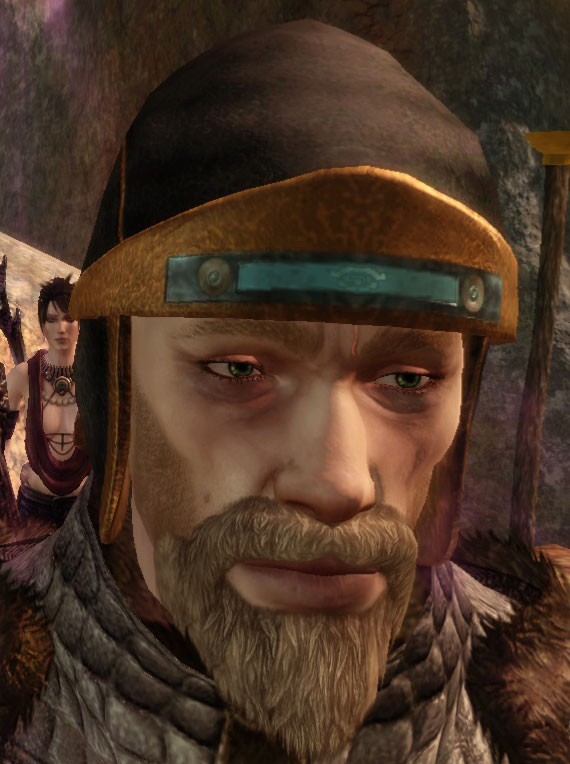
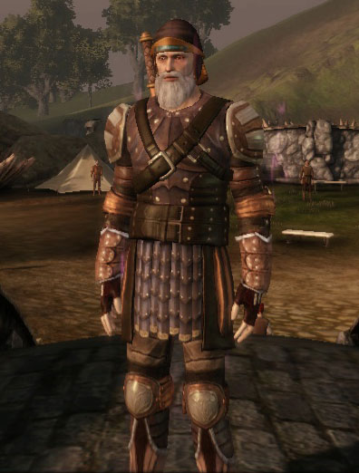
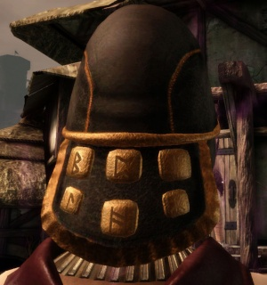

Community Contest 6: Equipment Contest


Contents
- 1 Brief
- 2 Groups and Prizes
- 3 Helpful Links
- 4 Guidelines (extended)
- 5 Entries
- 6 Weapon Model Contest
- 7 Armour Retexture Contest
Brief
Create a piece of equipment. There are two groups:
- Armour Retexture Group - This group is creating a new texture for an existing DAO armour or shield.
- Weapon New Model Group - This group is creating a new weapon or shield model.
The contest discussion thread can be found here.
Contest closed (Monday 10 January). Bundle can be found here.
Requirements
All entries must (many of these steps are covered in the video tutorial):
- complete the |entry checklist below and agree to the |Consent to Share
- include either a retexture OR a new model for the piece of equipment
- have a unique ID in a variations GDA
- reserve a variation slot on the Contest ID page
- create the variations GDA
- be created as an item in the toolset
- have a name/description/style that fits DA-canon or generic-canon (do not make a lightsaber or reference the Dagobah system in the description, for example, but you do not need to reference Ferelden)
- create a dadbdata of the item (R click the item resource > Builder to Builder Create)
Guidelines
Strong entries will:
- have a strong visual design
- Retexture Group:
- if using an existing DA model, make the new texture distinctly different so as to do something "new"
- have a high quality of texture at a suitable resolution (see below)
- accommodate tinting the item
- new Model Group: - (in addition to texture standards above)
- be positioned and scaled correctly to fit character and animations well.
- have a high quality of model
- use a suitable polycount (see below) and use the budget effectively
Suggestions
- New Model Group: sword, blunt weapon, staff, bow, shield,
- Retexture Group: clothing (full-body), chest armour, boots, gloves, shield
Allowable
While no "bonus points" will be given for the following, entries may:
- create armours for just one race/gender combination (HM, HF, EM, EF, DM, DF, QM). Obviously, creating for all seven combinations is great too :)
- use existing DA models provided a new texture is made which is distinctly different
- use existing DA textures provided a new model is made which is distinctly different
- modify existing DA models or textures provided the overall texture/model combination is dintinctly different from the original
- include several pieces in one submission (ex. boots, gloves, chest items as an item set)
- entering the contest several times, including entering both groups (provided a single entry only enters a single group)
Not Allowable
Please:
- do not use somebody elses model or texture unless you have permission to do so under the consent to share outlined below
- do not submit weapons for which there is no suitable animation (For example, there is no DA animation for thrusting with a pike, firing a sling, etc)
- a single entry may not enter both groups - your entry is EITHER a new (textured) model, OR it is a retextured existing model
Groups and Prizes
Groups
This contest has two groups. A single entry may only enter one group.
Retexture Group
- 1st place - 10 points, chooses first
- 2nd place - 5 points, chooses second
- 3rd place - 3 points, chooses third
- Best Newcomer - 3 points (unless 1st, 2nd or 3rd place)
- All other entries meeting requirements - 1 point
New Model Group
- 1st place - 15 points, chooses first
- 2nd place - 10 points, chooses second
- 3rd place - 5 points, chooses third
- Best Newcomer - 3 points (unless 1st, 2nd or 3rd place)
- All other entries meeting requirements - 1 point
Best Newcomer Award
If an entrant has not entered a Community Contest before, they qualify for the Best Newcomer Award. This award is given to the newcomer with the highest number of votes.
Prizes
Please see Community Contest Prizes
Helpful Links
New Model Group
- Custom Weapon Appearances - covers how to set up a weapon in 3DS Max for exporting.
- Adding item appearances to DA - covers how to add your new appearance to DA without replacing anything.
- Eshme's Import/Export Script for 3ds max and GMax (new models only)
- Texture Formats - Builder Wiki
- ItemVariation Documentation - Builder Wiki
Retexture Group
- Retexturing an existing model - covers how to find and retexture a DA armour model.
- Adding item appearances to DA - covers how to add your new appearance to DA without replacing anything.
- Reskinning an item tutorial - Builder Wiki
- Texture Formats - Builder Wiki
- ItemVariation Documentation - Builder Wiki
Guidelines (extended)
Models
As a guideline (not a strict limit), aim for 1000 - 2000 triangles for weapon/shield models. Anything over 3000 triangles had better have a very good reason for it ;)
Textures
The recommended is in line with DA spec. Its pretty safe to go over though, but you shouldnt need more than double the texture space. I would not recommend using two or more textures - its really not needed for equipment.
Weapons/shields
- recommended: 512x512
- reasonable maximum: 512x1024
Full-body outfit (includes hands/gloves and feet/boots)
- recommended: 1024x1024
- reasonable maximum: 1024x2048
Chest
- recommended: 1024x1024
- reasonable maximum: 1024x1024
Boots/gloves
- recommended: 256x256
- reasonable maximum: 256x512
GDA (variations)
Remember that you should be EXTENDING (and not replacing) the variations. This also applies to replacing textures - forcibly overwriting textures WILL BE JUDGED UNFAVORABLY, since it requires extra work to fix. As such your variations sheet should contain ONLY one extra line.
Mike will include a screenshot of his finished GDA once he's done.
Entries
Entry File(s)
File Contents:
- dadbdata of your item file
- variations GDA
- mmh, msh, phy, mao, dds as appropriate
File Format: one .7z file (preferred)
Checklist
- Create your file (see above)
- Create a Dragon Age Nexus page for your entry and upload the above file. Please include "Community Contest" in the title.
- Edit this page with a description and pictures of your content.
- Please include pictures which are both functional as well as attractive (so your work can be seen clearly)
- Link to your DA Nexus page. See the sample entry.
- Optionally, let us know in the Contest Discussion Thread that you've entered
For the general entry guidelines (as well as more detail on the above steps), please see the Entry FAQs
For information on Judging, please see the Judging page.
IMPORTANT - consent to share By entering this competition you consent to share your work for other community members to benefit from. Where appropriate, source files should be shared (prop models, VFXProj files). The work *MUST* be your own (obviously you may use DA assets). Others may use and modify your work in their Dragon Age mods, though are encouraged to give credit. As the entries are judged, local copies will be saved If your work is taken down. If your work is taken down, you allow for it to be re-uploaded, crediting the work in your name.
Weapon Model Contest
Crow & Crane by Adonnay - 1st Place
A set of two longswords for the dual wielding archetypes. They are meant to really shine during dialog scenes hence the slightly larger textures of 1024 x 1024. Both swords are quite powerful and are meant for higher level content.
  
{kind=link}
{kind=link}
{kind=link}
HjorrMikill by Nattfodd - 2nd Place
HjorMikill means GreatSword in ancient language. Protected by the mountains and snow, this sword was probably forged for a King when the elders were young, to protect in troubled times. This sword is the backbone of the life a warrior knows, forged in fire and ice: who will be the one ready to let this old sword to sing again?
{kind=link}
{kind=link}
{kind=link}

{kind=link}
Fenod's Weapons - 3rd Place
Lunacy(Dagger) by Fenod
- Many who saw the previous owner of this fine blade in battle thought he was insane. He was
- the leader of a group of thugs in Denerim who claimed to be fearless. To set an example for
- his men the commander would always fight blindfolded with wax plugging up his ears. It turns
- out he truly was mad and met his end when he ran into a volley of arrows...fired from his own men.
{kind=link}
{kind=link}
Dreadscale(Battleaxe) by Fenod
- This weapon is not crafted from scales of any sort, instead
- it has been fashioned from obsidian. Dreadscale's name
- comes from numerous number of dragons that it has slain.
- It is no surprise then that in this age, the Dragon Age,
- many believe it to have an enchantment which allows the
- one who wields it to strike with enough force to cleave a
- dragon in twain.
- Whatever enchantment it possesses does not seem to
- increase its effectiveness in killing dragons. This has
- become increasingly apparent as fool after fool has met
- their end trying to best dragons while wielding Dreadscale.
- That is not to say that it is not a formidable weapon, for in
- the right hands Dreadscale is truly a sight to behold.
{kind=link}
{kind=link}
Deadweight(Maul) by Fenod
- Every time the story of this weapon's origin is told it varies
- to a great degree. The current telling of the tale claims that
- the weapon originally belonged to a scrawny stonecutter in
- Denerim by the name of Rupert. Rupert had grown weary
- of cutting stone and so he sought to join the city guard.
- The problem was the guard captain told him he had no place
- wielding a weapon and that he would only injure himself or
- the other guards. Rupert would show up every year and
- try to join and each time he was turned away.
- Eventually the guard captain realized that Rupert would
- not cease so he had a crude maul fashioned from rock and
- told Rupert that if he could wield it he would be allowed to
- join the city guard. Of course the captain did not expect
- Rupert to attempt the feat, but much to his dismay Rupert
- bent down, gripping the rock.
- The guard captain looked on in astonishment as Rupert
- hefted the ungainly weapon over his head, only to have it
- fall onto him, crushing him. Such is the tale of Rupert and
- his weapon, aptly named Deadweight.
{kind=link}
{kind=link}
Barbarous Mace by Fenod
- This crude weapon appears to be Chasind, but has no
- legends to its name and bears no unique markings,
- nonetheless its effectiveness cannot be denied when in
- capable hands. The ensuing carnage is enough to paralyze
- foes with fear.
{kind=link}
{kind=link}
Bonemaw by Fenod
- This macabre weapon was carved from the bone of a high
- dragon, sharpened so that it can be wielded as a crude
- blade. The name of the smith that created the blade and
- why it was made in such a manner has been lost to time.
- With each passing age it finds a new name, in this age it is
- known as Bonemaw.
- Unlike a refined dragonbone blade Bonemaw is misshapen
- and unwieldy. Those who have seen it wielded in battle
- claim that it can fell a pride demon in one swing though such
- claims are naught but fanciful tales, giving the blade a
- legendary status of sorts.
- While it may not dispatch a Pride demon in a single blow
- there is no denying that the blade is indeed a formidable
- weapon. If you find yourself pitted against an opponent
- wielding this weapon it is advisable that you flee. You are
- lucky then that you find it in your hands.
{kind=link}
{kind=link}
Malice(Dagger) by Fenod
- Malice's construction is simple, similar to Chasind weapons
- though much cruder in design. It's blade is fitted to a metal
- bar which is in turn fitted to the weapon's basket hilt. It is
- one of the last known weapons to be forged from the same
- ore as the greatsword Agony. The name of the ore has
- been lost to the ages along with it's exact properties.
- It is apparent that the ore can be heated to extreme
- temperatures without it melting. Surprisingly, wielding the
- weapon will not cause injury as the heat that it gives off is
- similar in nature to the effect of a fire enchantment.
{kind=link}
{kind=link}
Pestilence by Fenod
- It is believed that the axe known as Pestilence was taken
- from the fade where it is difficult to discern living beings
- from inanimate objects. This axe is one such object. It is
- covered in flesh and yet by all appearances it behaves just
- as any axe would.
- As if this were not peculiar enough it increases the skill of
- whomever wields it. While it is widely assumed that this is
- because the weapon is enchanted a few believe that the
- weapon is alive and guides the hand of those who wield it.
- It's edge is coated with poison leading some to believe that
- the axe itself secretes the poison. Whether or not this
- presumption is valid there is no mistaking the foul nature of
- the poison.
{kind=link}
{kind=link}
Lament by Fenod
- The name of the original owner of this blade is long forgotten
- but it is said that she loved battle so much that she would seek
- it out all across Ferelden. Her skill with a blade was exceptional,
- but it was the blade which she wielded that made her a legend. She
- called the blade Lament, in honor of those that fell in battle,
- enemies and allies alike.
- She believed that death fueled the blade and give her the
- will to fight even when all those around her had fallen.
- Those who saw her in battle claimed that with every swing
- the blade would let out a cry. Today it is known that the
- blade has no such enchantment though it is noted that the
- blade does indeed bear an enchantment of an unknown nature.
{kind=link}
{kind=link}
Knotwood Staff Helekanalaith - Best Newcomer
- This gnarled staff's origin can be traced back to the Knotwood Hills. No doubt it once belonged to a hangman's tree or worse; a darkspawn scratching pole!
{kind=link}
{kind=link}
Dagger of Ashyera's Cult by Gisle Aune
These daggers - allthough scarce in number in Ferelden - are quite common located within a cult in some small state in the Free Marches. (for usage in my mod The Dark Deal (WIP))
Bonuses: +2 damage, +6 attack Material: Silverite.
Note: I was granted extra time by Mikemike57 - sorry for delivering almost too late.
{kind=link}
Warhammer by mikemike37
This is just a sample entry for others to see the sort of thing judges might expect to see, and the format in which it has been submitted.
NOTE: it is not a requirement of this contest to create the script to give the item to the player, or create any kind of player package. You do have to create the item in the toolset and export it as a dadbdata though.
{kind=link}
Cudgel by BlackPhi
A lump of wood, crudely shaped and polished, for hitting people with. As used by peasants, poorly equipped militia and low-level thugs.
Although clubs are a staple of FRPG, DA:O doesn't include any, so this entry for the new model group fills the gap.
{kind=link}
{kind=link}
Lightsaber by InBleedingRapture
- http://www.dragonagenexus.com/downloads/file.php?id=2009 Dragon Age Nexus project page]
This mod adds a working lightsaber to Dragon Age, complete with a sound pack, multiple blade colors, and appropriate stat bonuses.
{kind=link}
Armour Retexture Contest
Mage Helm by BlackPhi - 1st Place
This leather helm is for the mage who prefers to be discreet. At first glance it is merely an ordinary leather helm, only on careful examination are the lyrium infused runes visible. For effective discretion this should be combined with mage's leathers and a mage's club.
An entry for the retexture group.
The helm is restricted to mages and provides a mental resistance bonus.
Any apostate mage who wants to remain free for long (and doesn't fancy spending the rest of their life in the Korcari Wilds) needs to break the habit of wearing distinctive flowing robes with a daft-looking hood and a dirty great staff poking above their head. This helm is a part of a set of items to provide magical benefits whilst looking, to a casual glance, like ordinary gear.
  
{kind=link}
{kind=link}
{kind=link}
The Valorous by Vaylise - 2nd Place
This retexture is available for both genders and all the races.
Armor description: The Valorous is designed for the fashion conscious to show off their wealth and style in this aesthetically pleasing armor. Even in the battlefield, this lightweight armor is sure to draw the envy of many with its genuine gold studs delicately patterned across the fine polished leather.
{kind=link}
{kind=link}
{kind=link}
{kind=link}